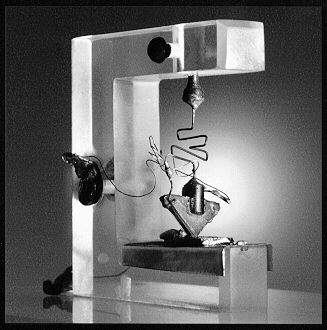
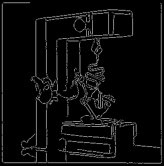

USAGE: bcd inimg outimg sigma [-h][-t][-T thld][-L]
bcd detects and marks contours of regions in a grayscale image
by invoking Boie-Cox algorithm
ARGUMENTS:
inimg: input image filename (TIF)
outimg: output image filename (TIF)
sigma: width of Gaussian filter (float)
OPTIONS:
-h : do not apply hysteresis
-t : do not thin image
-T thld : threshold value (int)
-L : print Software License for this module
Example:
bcd transist.tif transistb.tif 1.5 -T 20
transist.tif:

transistb.tif:

Copyright (C) 1999 MLMSoftware Group, LLC.